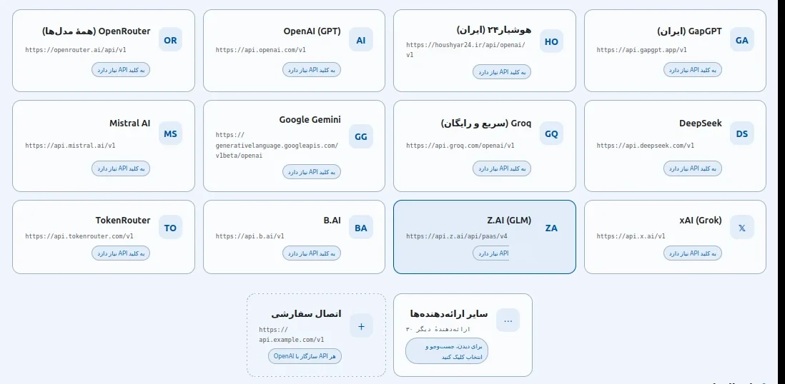
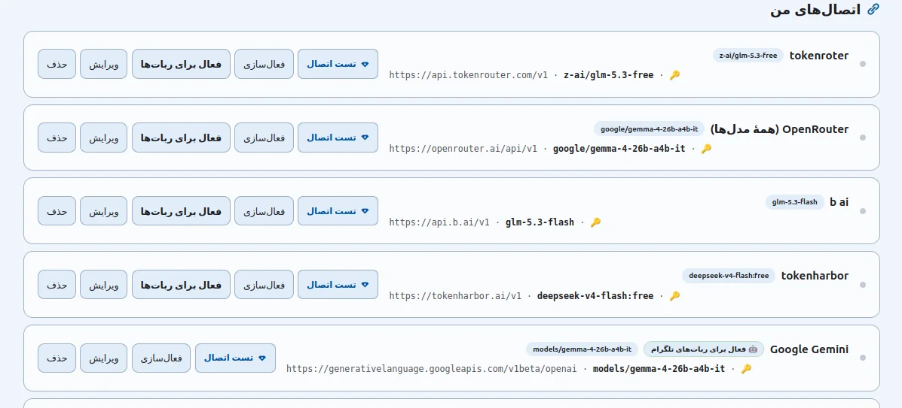
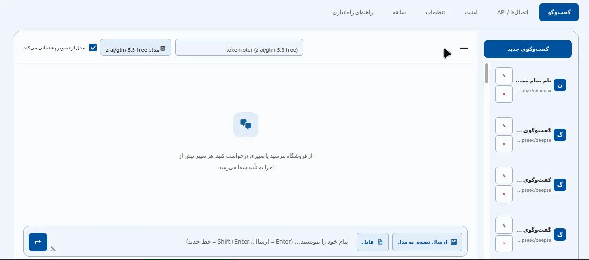
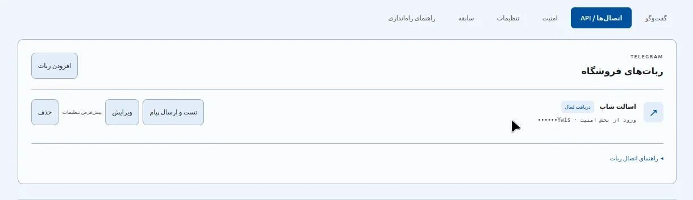
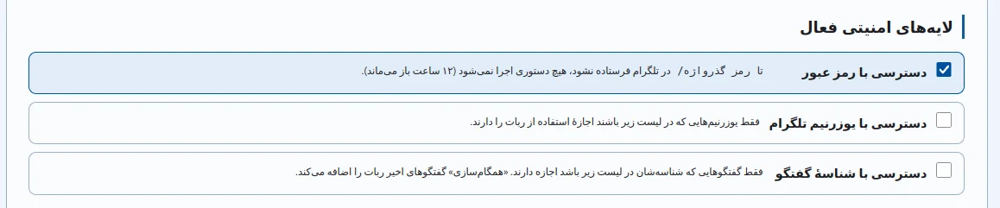

فرمانیار؛ دستیار هوش مصنوعی فروشگاه ووکامرس شما
فرمانیار افزونهای وردپرسی است که کاملاً با ووکامرس سازگار است و مدیریت فروشگاه را برای شما ساده میکند. هوش مصنوعی به فروشگاه وصل میشود و شما دیگر لازم نیست برای هر تغییر کوچکی میان صفحههای پیشخوان بالا و پایین بروید؛ به زبان خودتان میگویید چه میخواهید و انجام میشود.
فرمان بدهید — فروشگاه اجرا میکند!
هرچه فروشگاه لازم دارد، با یک فرمان
فرقی نمیکند تازه فروشگاه زده باشید یا فروشگاهی شلوغ با صدها محصول داشته باشید؛ فرمانیار زمان شما را آزاد میکند تا به جای کارهای تکراری، به رشد کسبوکارتان فکر کنید.
ساخت، ویرایش، حذف و مشاهدهٔ اطلاعات محصولات؛ از قیمت و موجودی تا توضیحات و تصاویر.
مشاهدهٔ اطلاعات مشتریان و سفارشها و تغییر وضعیت سفارشها، بدون گشتن در صفحههای پیشخوان.
ساخت، ویرایش و حذف کد تخفیف با همهٔ قواعد ووکامرس؛ فقط بگویید چه تخفیفی میخواهید.
ساخت، ویرایش و حذف دستهبندی؛ ساختار فروشگاه را منظم و مرتب نگه دارید.
افزودن محصولات یا کدهای تخفیف از فایل CSV، بهصورت مرحلهبهمرحله و با بررسی پیش از ثبت.
فایل اکسل، CSV یا متنی را پیوست کنید تا فرمانیار محتوایش را بخواند و بر اساس آن عمل کند.
اگر مدل انتخابی شما از تصویر پشتیبانی کند، عکس محصول را بفرستید تا توضیحاتش نوشته شود.
نام دستیار و لحن و سبک نوشتنش را بر اساس نمونهمتنهایی که به او میدهید تنظیم کنید.
قیمتها و اطلاعات ۱ تا ۲۰۰ محصول را در یک فراخوانی تغییر دهید؛ درصدی یا مبلغی، با فیلتر دسته یا موجودی.
اتصال به بیش از ۴۰ ارائهدهنده؛ آزادانه انتخاب کنید
فرمانیار با سرویسهای معروفی مثل GapGPT و هوشیار۲۴ کار میکند و در مجموع از تمام ارائهدهندههای ایرانی و خارجیِ سازگار با استاندارد OpenAI پشتیبانی میکند؛ بیش از ۴۰ ارائهدهنده بهصورت بومی و بقیه هم با کمی سفارشیسازی.

هر سرویسی که دوست دارید
هر ارائهدهنده در فرمانیار یک کارت ساده دارد: نام سرویس، آدرس API و کلید شما. سرویس ایرانی یا خارجی، ابری یا لوکال — مهم نیست؛ فرمانیار با همهٔ آنها حرف میزند.
-
پشتیبانی بومی از بیش از ۴۰ ارائهدهنده
از GapGPT و هوشیار۲۴ تا OpenAI، Gemini، Groq و DeepSeek — آماده و بدون تنظیم اضافه.
-
سازگار با استاندارد OpenAI
تقریباً هر ارائهدهندهای که با قالب OpenAI سازگار باشد، با کمی شخصیسازی متصل میشود.
-
حتی سرویسهای لوکال
Ollama و LM Studio روی سیستم خودتان هم بهصورت بومی پشتیبانی میشوند — بدون کلید API.
«اتصالهای من»؛ همهٔ سرویسها یکجا
هر اتصال شما یک کارت است با نام، آدرس، مدل و کلید. تست، ویرایش، فعالسازی و حذف — همه در همان یک نگاه.

هر کارت اتصال، این امکانات را دارد
اتصالِ «فعال» پیشفرض گفتوگوهای تازه است؛ در هر گفتوگو میتوانید اتصال و مدل دیگری انتخاب کنید.
-
تست اتصال
با یک کلیک سلامت اتصال بررسی میشود؛ در صورت موفقیت، پیام سبز «موفقیت اتصال» همراه با تعداد مدلهای در دسترس نمایش داده میشود.
-
ویرایش اتصال
تغییر نام، آدرس، کلید و مدل هر زمان که خواستید. اگر فیلد کلید را خالی بگذارید، کلید قبلی حفظ میشود.
-
فعالسازی برای گفتوگو
ارائهدهندهٔ پیشفرض گفتوگوهای تازه در پیشخوان را تعیین کنید.
-
فعال برای رباتهای تلگرام
تعیین کنید گفتوگوی تمام رباتهای تلگرام از کدام اتصال و مدل استفاده کنند — مستقل از اتصال پیشخوان.
گفتوگوی اختصاصی با هوش مصنوعی، داخل پیشخوان
یک صفحهٔ گفتوگوی کامل و فارسی در پیشخوان وردپرس؛ با تاریخچهٔ گفتوگوها، انتخاب اتصال و مدل، و امکان ارسال تصویر و پیوست فایل.

با هوش مصنوعی حرف بزنید، نه با پیشخوان
در هر گفتوگو میتوانید اتصال و مدل دیگری انتخاب کنید. گفتوگوهای قبلی در ستون تاریخچه ذخیره میشوند و هر گفتوگو قابل پین یا حذف است. Enter برای ارسال و Shift+Enter برای خط جدید.
-
ارسال تصویر به مدل
اگر مدل انتخابی شما از تصویر پشتیبانی کند، عکس محصول را بفرستید و توضیحات کامل محصول را بگیرید.
-
پیوست فایل فروشگاه
فایلهای CSV، اکسل و متنی را پیوست کنید؛ متن فایل روی سرور خوانده میشود و فقط متنِ استخراجشده برای هوش ارسال میگردد — نه خود فایل.
CSV TSV XLSX XLSM TXT MD JSON XML HTML LOG — دادههای فروشگاه را بدهید تا دستورها دقیقتر شوند.
مدیریت فروشگاه از تلگرام؛ بدون نیاز به رایانه
فرمانیار به ربات تلگرام وصل میشود و از گوشی هم میتوانید فروشگاه را مدیریت کنید؛ سفارشها را ببینید، محصول بسازید و کد تخفیف تعریف کنید. همهچیز داخل تلگرام.

دو راه برای دریافت پیامهای تلگرام
فرمانیار از دو روش دریافت پیام پشتیبانی میکند: وبهوک برای تحویل فوری و دریافت دورهای (Polling) برای هر هاستی. تفاوت این دو را با یک تشبیه ساده بفهمید:
مثل این است که آدرس خانهتان را به پستچی بدهید تا نامه را همان لحظهٔ رسیدن بیاورد دم در. تلگرام خودش هر پیام را بیدرنگ و مستقیم به سایت شما تحویل میدهد.
- سریعتر و سبکتر؛ سرور فقط وقتهایی کار میکند که واقعاً پیامی هست
- مناسب فروشگاه با دامنهٔ عمومی و گواهی HTTPS معتبر
- نیازمند هاست عمومی HTTPS — روی سرور لوکال کار نمیکند
مثل این است که هر چند دقیقه خودتان به صندوق پستی سر بزنید و بپرسید «نامهٔ جدیدی دارید؟». افزونه بهصورت خودکار و پیوسته به تلگرام سر میزند و پیامهای جدید را برمیدارد.
- بدون تنظیم خاصی کار میکند؛ روی هر هاستی حتی سرورهای داخلی و لوکال
- گزینهٔ جایگزین وقتی سایت از اینترنت قابل دسترسی نیست
- پیامها با کمی تأخیر دریافت میشوند و سرور همیشه در حال سر زدن است
فعالسازی وبهوک، در سه گام
برای دریافت فوری پیامهای تلگرام روی هاست عمومی HTTPS، این سه گام را انجام دهید:
- Polling را غیرفعال کنید
در تب «امنیت»، گزینهٔ دریافت دورهای (Polling) را خاموش و تنظیمات را ذخیره کنید.
- ثبت وبهوک
دکمهٔ «ثبت وبهوک برای ربات انتخابشده» را بزنید و منتظر پیام موفقیت بمانید. آدرس وبهوک همراه کلید امنیتی خودکار ثبت میشود؛ نیازی به ساختن دستی آن نیست.
- آزمایش کنید
از حساب مجاز، در گفتگوی خصوصی ربات یک درخواست فقطخواندنی (مثل گزارش فروش) بفرستید و رسیدن پاسخ را بررسی کنید.
امنیت در سه لایه؛ اختیار همیشه دست خودتان
قبل از اینکه فرمانیار کاری مهم انجام دهد — مثلاً محصولی را ویرایش یا حذف کند — از شما اجازه میگیرد. هر درخواست عملیات بهصورت کارت تأیید نمایش داده میشود: یکبارمصرف، منقضاشدنی و مقید به همان عملیات و مقادیر تأییدشده.

سه لایهٔ امنیتی دسترسی به ربات
هر تعداد از لایهها را که بخواهید فعال کنید؛ خالی گذاشتن همه، هر سه لایه را فعال میکند.
تا زمانی که دستور /رمز گذرواژه در تلگرام فرستاده نشود، هیچ دستوری اجرا نمیشود. پس از ورود موفق، دسترسی تا ۱۲ ساعت باز میماند.
فقط یوزرنیمهایی که در لیست مجاز باشند میتوانند از ربات استفاده کنند؛ بقیه حتی با داشتن توکن هم راهی به فروشگاه ندارند.
فقط گفتوگوهایی مجازند که شناسهشان در لیست باشد. دکمهٔ «همگامسازی» گفتوگوهای اخیر ربات را بهصورت خودکار به لیست اضافه میکند.
دو نمونه دستور برای یک فروشگاه واقعی
این دو دستور از پرتکرارترین نیازهای یک فروشگاه واقعی طراحی شدهاند. فرمان را میفرستید، فرمانیار پیشنهاد عملیات را در یک کارت تأیید نشان میدهد و فقط پس از تأیید شما اجرا میشود.
- جستوجوی محصولات: فرمانیار محصولات دستهٔ «کفش ورزشی» را پیدا میکند و موجودی هر یک را بررسی میکند.
- کارت تأیید مدیر: فهرست تغییرات پیشنهادی — قیمت قبل و بعد، تعداد اقلام مشمول تخفیف — برای شما نمایش داده میشود.
- اجرای گروهی: با تأیید شما، تا ۲۰۰ محصول در یک فراخوانی بهروزرسانی میشود و گزارش نتیجه را میگیرید.
assets/approvals/command-1.png
- استخراج قواعد: فرمانیار مقدار تخفیف، حداقل خرید، محدودیت مصرف هر کاربر و تاریخ انقضا را از متن شما استخراج میکند.
- کارت تأیید مدیر: پیشنمایش کامل کد تخفیف با همهٔ قواعد ووکامرس — از محصولات مجاز تا سقف مصرف — نمایش داده میشود.
- ساخت و فعالسازی: با تأیید شما، کد تخفیف در ووکامرس ساخته و بلافاصله قابل استفاده میشود.
assets/approvals/command-2.png
در چند دقیقه، دستیار شما آمادهٔ کار است
نصب فرمانیار چند دقیقه بیشتر وقت نمیگیرد؛ افزونه را نصب میکنید، کلید API سرویس دلخواهتان را وارد میکنید و از همان لحظه دستیارتان آمادهٔ کار است.
فایل افزونه را در وردپرس بارگذاری و فعال کنید؛ ووکامرس هم فعال باشد.
از میان بیش از ۴۰ ارائهدهنده، سرویس دلخواهتان را انتخاب و کلید API آن را وارد کنید.
از پیشخوان یا تلگرام، به زبان خودتان بگویید چه میخواهید؛ فروشگاه اجرا میکند.